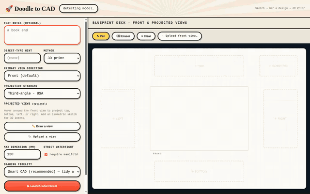
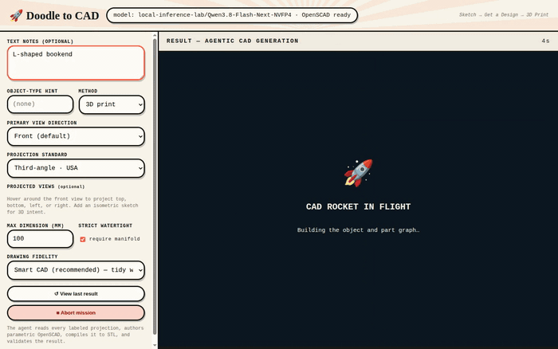
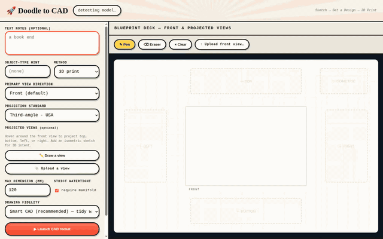
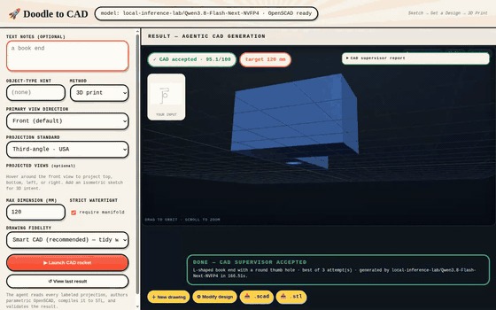
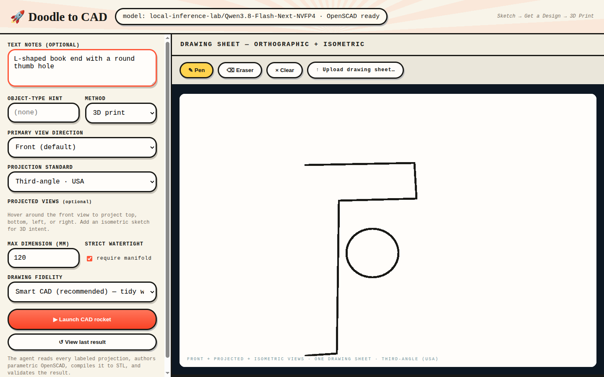
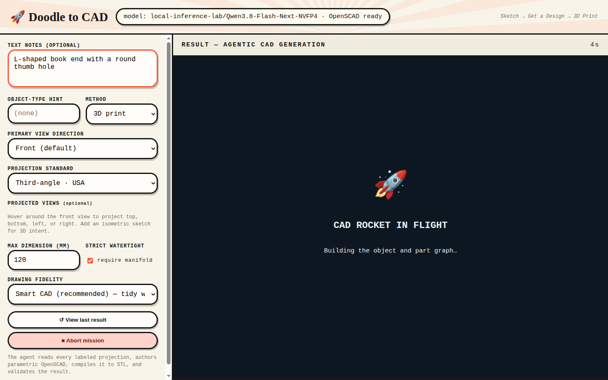
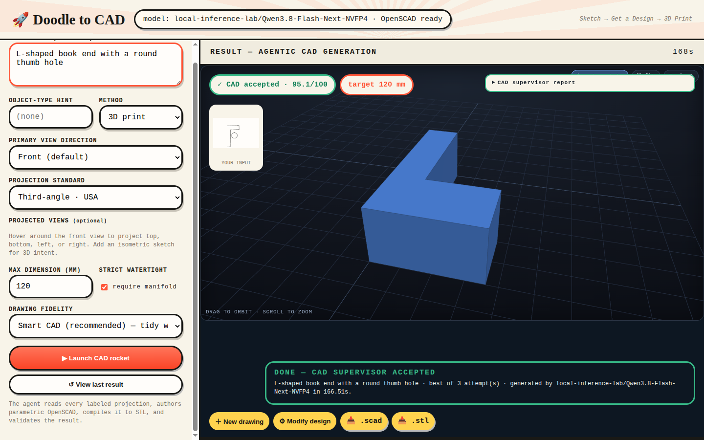
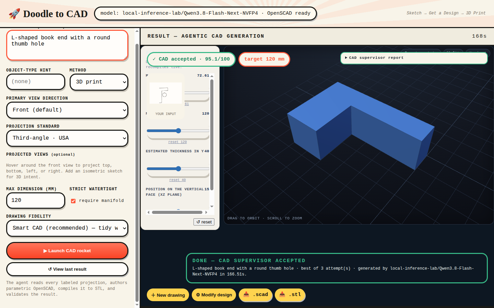
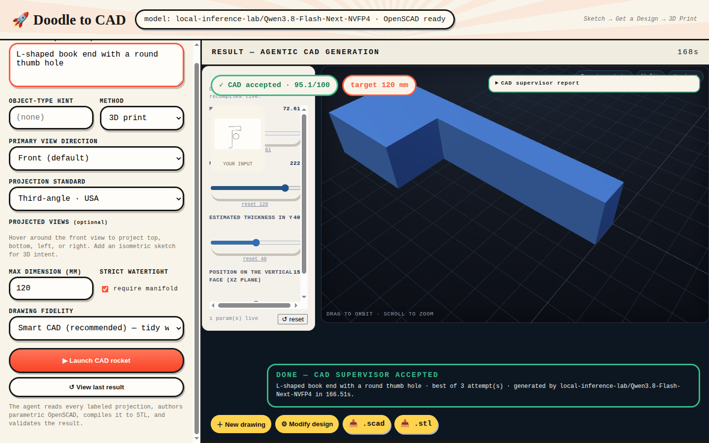
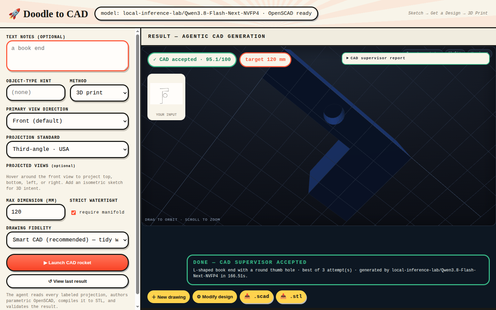

Doodle to CAD — live-captured demo gallery real runs
Captured against the running app with the local vLLM model. Click any frame to see it enlarged in chat.

MULTIVIEW (100/100): pen draws 2-view engineering sheet → accepted 3D

MULTIVIEW: orbit — 4 cutouts verified via STL genus=4

hero_flow.gif — single-view doodle: rocket → accepted 3D → live sliders

hero_3d.gif — orbit (thumb hole sweeps in) + parametric reshape

02 — pen-drawn L-bookend doodle + notes

03 — agentic pipeline in flight

04 — accepted: 95.1/100 supervisor score

06 — parametric sliders from Modify

07 — live recompile: 1 param live

12 — orbit shows the real thumb hole